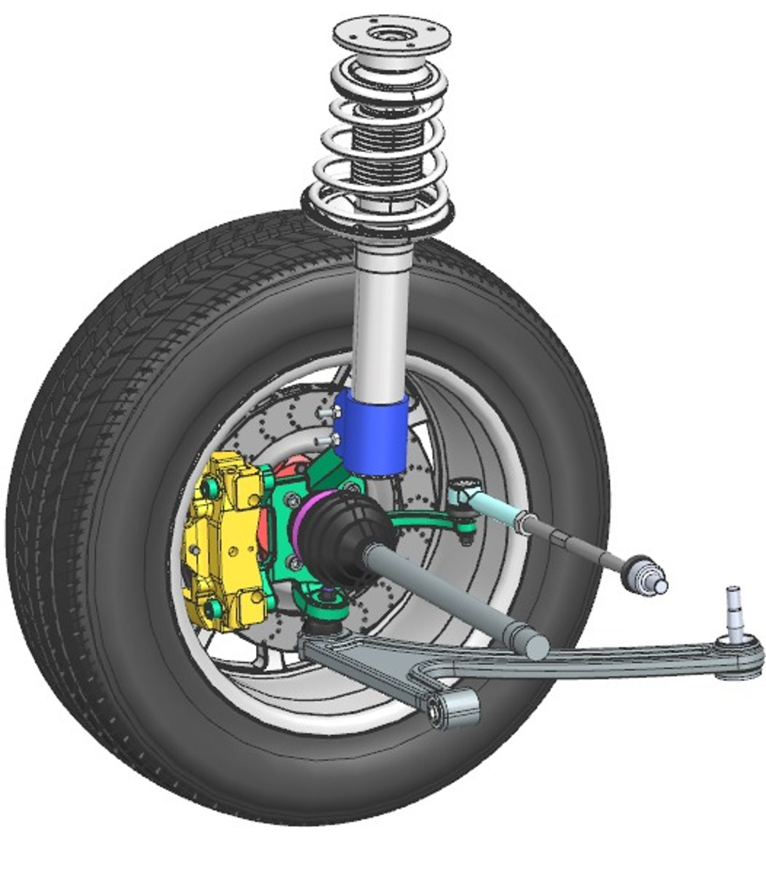
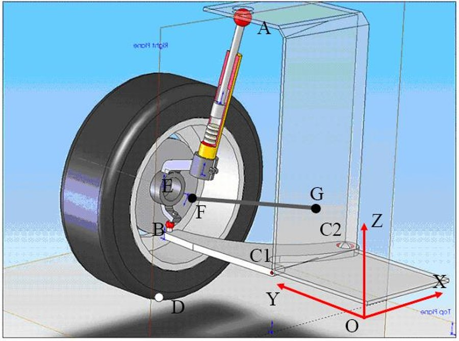
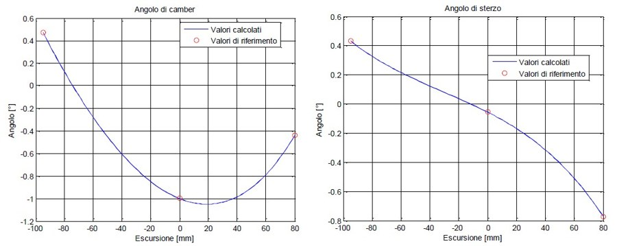
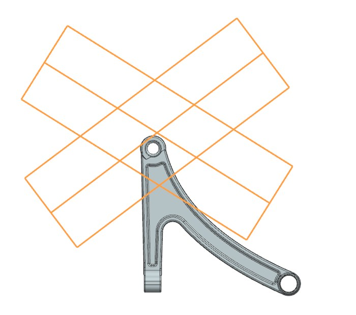
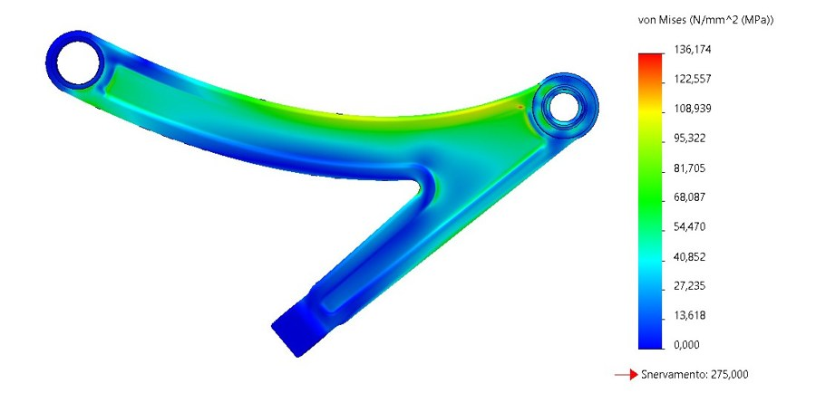
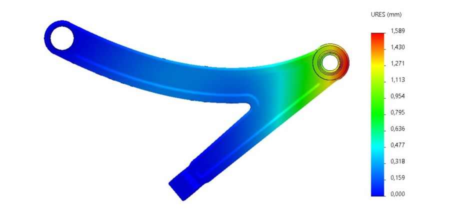
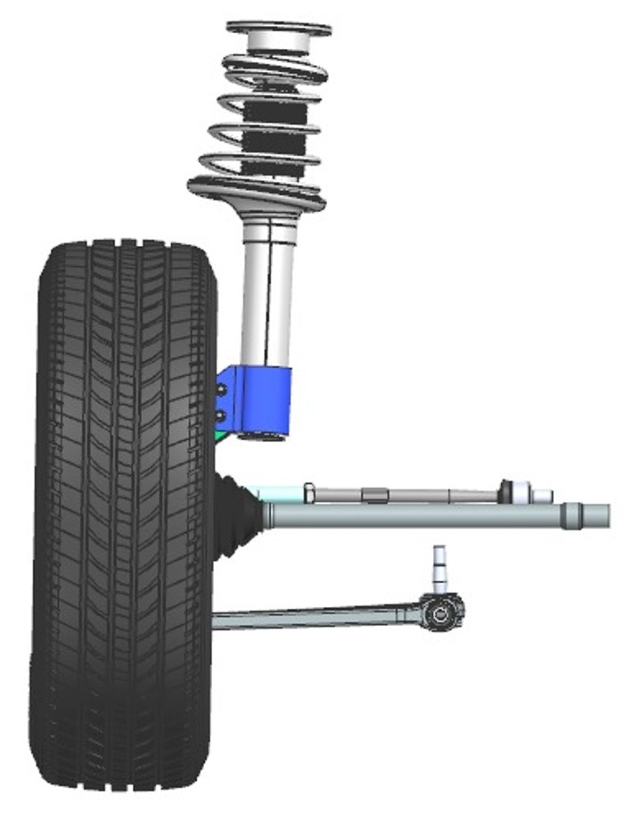
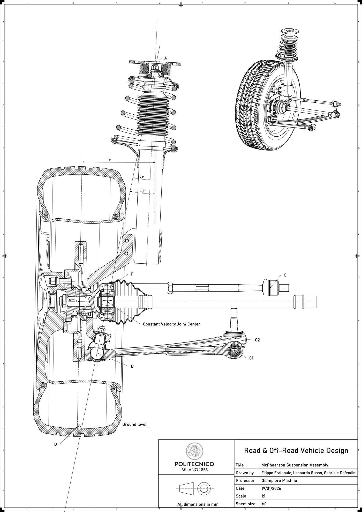

McPherson Suspension Design

Design of the overall assembly of a McPherson strut for a front-drive axle, developed for the "Road and Off-Road Vehicle Design" course at Politecnico di Milano, with particular focus on the suspension's lower arm. Starting from target camber and steering angle curves at nominal position, full compression and full extension, the suspension's kinematic hardpoints were optimized, the resulting loads were used to size and validate the lower arm, and the complete assembly was modeled and drawn up to production-drawing level.
Suspension Kinematics and Optimization

The suspension is defined by 8 kinematic points (upper strut mount, lower ball joint, the two lower-arm-to-chassis joints, wheel center and contact patch, and the steering rod joints), some fixed by the vehicle layout and others free within a bounded range. Five of these coordinates were treated as design variables and optimized in MATLAB — using a SimMechanics model to compute camber and steer as a function of wheel travel, and the fmincon solver with a Weighted Sum Method on the RMSE of the camber and steering curves — to match the target angles at full compression, nominal position and full extension within 0.28% deviation.

The plots on the right compare the optimized camber and steering curves (blue) against the target values (red circles) across the full wheel travel range, confirming the fitted kinematic point coordinates reproduce the required suspension behavior.
Lower Arm: Loads, Envelope and Material
The lower arm was sized for the worst-case combined loading condition — simultaneous vertical, longitudinal and lateral forces at the contact patch, with the vertical load amplified by a k=2.5 factor for road irregularities and bump events. Resolving static equilibrium at the lower-arm bushings under this condition gives reaction forces of Bu = 5.88×103 N and Bv = 1.40×104 N, which govern the sizing of the component's critical cross-section.

The lower arm's shape also has to clear the wheel's full steering envelope — 37° inward and 32° outward from the nominal position — without interference, shown here as the orange sweep overlaid on the arm geometry. This packaging constraint, together with the die/forging draft requirements, drove the final planform of the component.
The selected material is 6061-T6 aluminium alloy (yield strength 275 MPa), manufactured via closed-die forging from cast billets and finish-machined on the functional surfaces — a process chosen for its balance of strength, formability and fatigue resistance in automotive suspension components.
Finite Element Analysis of the Lower Arm


The final geometry was validated in SolidWorks Simulation, modeling half of the (symmetric) component with a spherical joint constraint at C2, a pin constraint at C1, and a roller constraint at the ball joint, loaded with the Bu/Bv reaction forces computed above. The analysis predicts a maximum von Mises stress of 136 MPa (yielding safety factor of 2.01) and a maximum displacement of 1.59 mm, for a final component mass of 1.507 kg.
Suspension Assembly & Technical Drawing

With the lower arm finalized, the complete McPherson strut assembly — strut, coil spring, hub carrier, brake caliper, lower arm and tie rod — was modeled in Siemens NX according to the optimized kinematic points, and issued as a full A0 production drawing (shown below) detailing the assembly, its kinematic reference points and overall dimensions.

Tools and Technologies
- Kinematics & Optimization: MATLAB (SimMechanics,
fmincon constrained optimization)
- CAD & FEA: Siemens NX, SolidWorks Simulation
- Key Concepts: Suspension kinematics, forging-driven design, packaging/envelope constraints, structural sizing and FEA validation